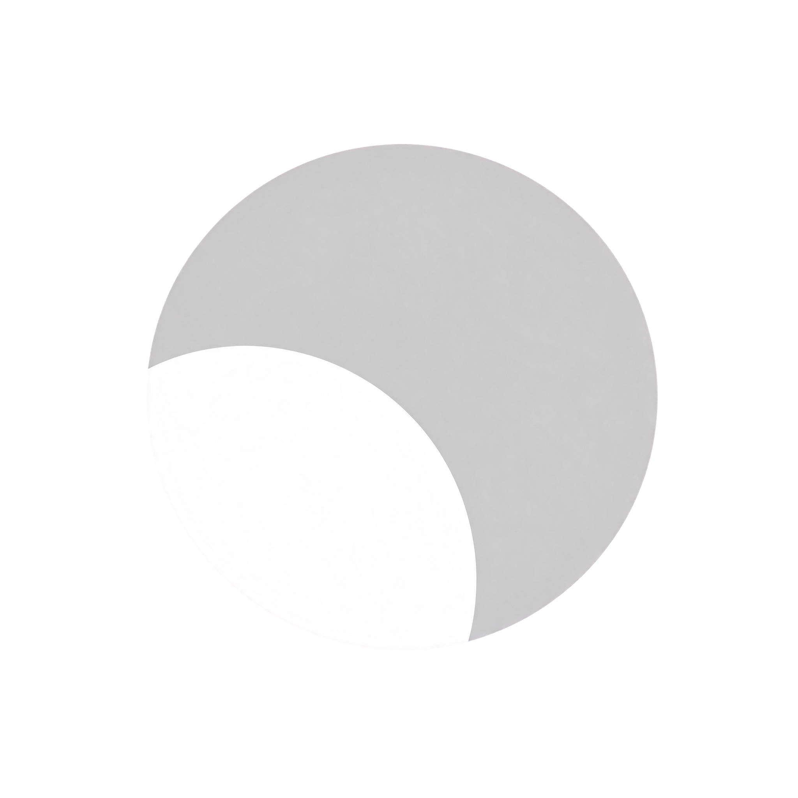

日月食原理演示
平视黄道面
垂直黄道面
← 返回公转总览
地月观测
受影面放大
全食／环食经过
偏食经过
全程结果
当前状态
当前影斑
本影边界
半影边界
伪本影边界
地球受影面
关闭
本影边界
半影边界
伪本影边界

日食观察

月食观察
全食事件
环食事件
显示月影扫掠区域
观测调节
日食
月食
典型场景（示意）
自由观测
全食事件
环食事件
地球公转
定位新月／满月
年度对比（定相位）
放大影区
轨道全景
地面视角
观察点 A
实拍示意
选择观测点
月食
0%
月面边缘刚接触日面
剩
4
步
日期
月球公转
Ⅱ